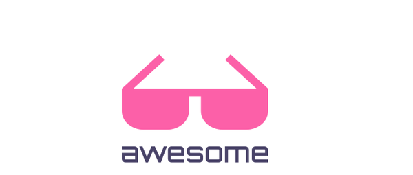
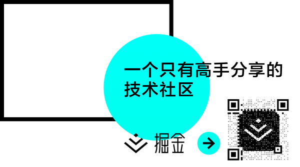

昨天写的文章，一大早发出去点开预览的时候发现格式都错乱了。又急着去上班就把文章给删除了。本来是周一更的习惯也就打破，放到周二去更新了。今天周二，度过了烦人的周一，又开始一个新的工作日。
这篇文章起初是想做：有哪些适合新手练手的前端项目？但是我发现我一个人没法整理，于是正在邀请几位大大朋友在帮忙。所以这个主题暂时空缺一周或是两周，在下周或是下下周的时候可能会补上来。也欢迎各位朋友在学习过程中碰到不错的练习项目可以积极的推荐。
学习编程专栏连载的练手项目篇，如有兴趣可以访问前三篇：
有哪些适合新手练手的Java项目？ - 学习编程 - 知乎专栏
有哪些适合新手练手的Java Web项目？ - 学习编程 - 知乎专栏
有哪些适合新手练手的Python项目？ - 学习编程 - 知乎专栏
本篇文章推荐分享五篇关于前端资源汇总的帖子，希望可以帮助到学习前端的你。同时你可以去看一看前端技能树喔：前端技能
第一篇：前端收藏夹 ，以及他们的github地址：GitHub - w3ctrain/w3ctrain.github.io: w3ctrian前端收藏夹
以下是目录，更多信息请访问他们的主页：
前端工具
自动化： Gulp 、 Grunt 、百度Fis 、Ant、Yeoman、Codekit、Koala、Webpack
预编译： Slim、Haml、Coffeescript、Sass、BabelJs、Jade、Less、Stylus、Pleeease、PostCSS、
查找工具：CssTriggers、screensiz.es、友盟指数、javascripting、builtwith、thetoolbox、stylesheets
版本控制：Github、GitCafe、GitLab、Bitbucket、Sourcetree、Cornerstone、版本控制之道、ProGit、廖雪峰的git教程、svn教程
编辑器：Sublime Text、Atom、HBuilder、WebStorm、MacDown、UltraEdit、ace、Brackets、LightTable、Visual Studio Code
在线编辑：Jsfiddle、Codepen、Jsbin、Runjs、sassmeister
调试/测试：Firebug、YSlow、IEDeveloperToolbar、Fiddler、ChromeDevTools、JSLint、JSHint、CSSLint、HTML Validators、UnitJS、Jasmine、BrowserStack、Testem、Dalekjs、NightWatch、Hardy
部署流程：YUI Compressor、UglifyJs、CleanCss、JSDoc
其它：CodeIf、H5Viewer、anvil、cssmixins、JSON Server、ngrok、Glyphter、CSSStats、spritegen、placehold.it、MWeb、browsersync.io、kjson.com、strut.io、Reveal.js、iconverticons.com、智图、longshadows、cubic-bezier、browserhacks、tool.oschina.net、Pagespeed、icomoon.io、circulus、Mock.js
博客/社区/资讯
国内综合：w3ctech、w3cplus、w3cfuns、前端乱炖、前端观察、segmentfault、html5tricks、腾讯ISUX、百度EFE、奇舞团、淘宝UED、前端里、div.io、慕课网、Codecademy、极客标签、InfoQ中国、WEB前端开发、前端开发博客、爱奇舞——H5.vc、看云、汇智网、伯乐在线
国外综合：tutsplus、CSSAnimation、TeamTreehouse、SmashingMagazine、CodyHouse、Echojs、Codeschool、codewars、Html5Rocks、SpeakerDeck、Alistapart、Lynda、DigitalTutors、Ponyfoo.com、tutorialzine
前端资讯：CSS-Tricks、WebDesignerNews、FrontEndFont、Sidebar.io、DesignerNews
前端大牛：Hugo Giraudel、Philip Walton、David Walsh、Sara Soueidan、Paul Irish、玉伯、廖雪峰、阮一峰、勾三股四、张鑫旭、余果、Sofish、糖饼、Evan You、Darren_聂微东、司徒正美、CSS魔法
各类插件
滑动/视差：fullPage、swiper、Slick、sliderjs、hammer.js、unslider、Superscrollorama、ScrollMagic、WOW、skrollr、stellar.js、multiscroll.js、iscroll、dragula、waypoints
动画/效果：popmotion、velocity、GreenSock-JS、Snapsvg、sketch.js、impress、blast.js、sticky、Colorify.js、nprogress、Mojs、skrollr、typed.js、Effeckt.css、Hover.css、Animatable、Animate.css、CSS3 Animation Cheat Sheet、pagePiling.js、headroom.js、hint.css、SpinKit、CircularProgressButton、css-loaders、pace、two.js、Sequence、ElasticProgress、CSSgram
兼容：Modernizr、bowser、retinajs、picturefill、Normalize.css、Respond、html5shiv、box-sizing-polyfill、elementQuery、css-element-queries
Chrome：clear-cache、EditThisCookie、Full Page Screen Capture、HTML5 Outliner、JSONView、Postman、User-Agent Switcher for Chrome、Window Resizer、页面自动刷新、Chrome Sniffer Plus
模板工具：Handlebars、Mustache、artTemplate、nunjucks、transparency、doT
其他：zxcvbn、Validation、moment、primer、Please.js、qrcode、dynamics.js、smartcrop.js、lazyload、imagesloaded、unveil、fastclick、jQuery Form Plugin、jQuery-File-Upload、sweetalert、toolbar、tooltipster、video.js、Font-Awesome、minigrid、bricks.js
主流框架
综合：React、Bootstrap、Foundation、SemanticUI、Purecss、UIKit、妹子 UI、Alice、materialize、material-design-lite、Html5Boilerplate、Material design、Lightning Design System、Vux
MVVM：AngularJS、Vue.js、Backbone、Avalon、knockout
JavaScript：JQuery、Zepto、prototypejs、emberjs、MooTools、Dojo、meteor、Domcom
Hybrid：React-Native、Nativescript、Phonegap、Ionic、Crosswalk、Meteor、Electron
游戏：Construct 2、ImpactJS、CreateJS、Three.js、PlayCanvas、Pixi、Hilo
手册/书籍
书籍：《JavaScript高级程序设计（第3版）》、《单页Web应用:JavaScript从前端到后端》、《JavaScript语言精粹》、《JavaScript DOM编程艺术 （第2版）》、《编写可维护的JavaScript》、《Web全栈工程师的自我修养》、《深入浅出Node.js》、《响应式Web设计》、《精通CSS》、《高性能JavaScript》、《You-Dont-Know-JS》
快速入门：学习CSS布局、Learn to Code HTML & CSS、Learn to Code AdvancedHTML & CSS、前端技能树
精选文章：如何跟上前端开发的最新前沿、移动H5前端性能优化指南、那些过目不忘的H5页面、玩转HTML5移动页面、MobileWeb 适配总结、搞定这些疑难杂症，向css3动画说yes
手册/规范：前端开发者手册、前端开发笔记本、Material Design 中文版、CSS规范、JavaScript Style Guide、Sass规范、ECMAScript3/5、ECMAScript6、W3C、CommonJS Modules
翻译文章：学习flexbox属性、使用Velocity.js改善用户体验
设计/交互
灵感来源：Dribbble、SiteInspire、Httpster、设计达人、PhotoshopLady、站酷、UI中国、uiparade、365psd、Behance、Naldz Graphics、mobile-patterns、wa.design、pinterest、花瓣、堆糖、觅处、视觉中国
学点设计：TutsplusDesign、优设网、PSDFAN、Envato、abduzeedo、Interactive Guide to Blog Typography、24Ways
交互体验：Navnav、Codyhouse、腾讯ISUX、淘宝UED、阿里巴巴中文站、阿里巴巴国际站、阿里妈妈UED、百度移动用户体验部、百度搜索用户体验中心、腾讯TGideas、腾讯MXD、腾讯UED、腾讯CDC、新浪UDC、迅雷CUED、uxbooth、tympanus
配色工具：Adobe color、FLATUI、Thedayscolor、colrd、Nipponcolors、Nolourlovers、中国传统色、日本传统色、Fashiontrendsetter
第二篇：github上值得关注的前端项目 以及他们的github地址，欢迎关注：GitHub - hawx1993/github-FE-project: A collection about github front-end project
一小部分目录
综合/资源
frontend-dev-bookmarks 一个巨大的前端开发资源清单。star:15000
front-end-collect 分享自己长期关注的前端开发相关的优秀网站、博客、以及活跃开发者。star:860
Front-end-Interview-questions 史上最全前端开发面试问题及答案
f2e-hub 包含Animation，UI，dialog，Carousels，color，image，workflow等。star:100
awesome-javascript 一系列很棒的javascript 库，资源。star:3100
fks 前端技能汇总，包含前端知识架构，后端知识，linux，书籍推荐等。star:4000
node123 node.js中文资料导航。star:1200
mobile-web-favorites 移动端web开发收藏夹。star:200
gulp-book Gulp 入门指南
Front-end-tutorial 最全的资源教程-前端涉及的所有知识体系。（12.25更新）
canvas/数据可视化
echarts 基于Canvas，纯Javascript图表库，提供直观，生动，可交互，可个性化定制的数据可视化图表。star:6900
Chart.js 使用<canvas>标签的简易HTML5图表。star:14600
sketch.js 跨平台JavaScript创意编码框架，gzip压缩后仅有2kb。star:1500
d3 一个基于数据操作文档的js数据可视化框架，最流行的可视化库之一。star:38000
zrender 一个轻量级的Canvas类库，MVC封装，数据驱动，提供类DOM事件模型，让canvas绘图大不同！star:850
c3 一个基于 D3.js 的可重用 JavaScript 图表库。几乎零学习曲线。star:4.5K（6.28更新）
img2css 将图片转为纯css代码。（11.3更新）
第三篇：网站：『引』最全前端资源汇集（更新网址），github地址：GitHub - JacksonTian/fks: 前端技能汇总 Frontend Knowledge Structure （github地址），号称最全的资源教程－前端涉及的所有知识体系。
部分目录（此处所有目录链接到主页），详细信息请访问具体网址和github
1 · 综合类
2 · 入门类
3 · 工具类
4 · 综合效果搜索平台
5 · 团队Blog|周报类
6 · 开发中心
7 · Nodejs
8 · 综合API
9 · Ecmascript
10 · Js template
11 · HTML5(HTML)
12 · CSS3(CSS)
13 · Angularjs
14 · React
15 · vue
16 · 移动端API
17 · jQuery
18 · D3
19 · Requriejs
20 · Seajs
21 · Less,sass
22 · Markdown
23 · 兼容性
24 · UI相关
25 · 其它API
26 · 图表类
27 · 正则
28 · 前端规范
29 · PHP
30 · 各大公司开源项目
31 · 常用
32 · 算法
33 · 移动端
34 · JSON
35 · 焦点图
36 · Ext, EasyUI, J-UI 及其它各种UI方案
37 · 页面 社会化 分享功能
38 · 富文本编辑器
39 · 前端概述
40 · Gulp
41 · Grunt
42 · Fis
43 · pc图轮
44 · 移动端图轮
45 · 文件上传
46 · 模拟select
47 · 取色插件
48 · 城市联动
49 · 剪贴板
50 · 简繁转换
51 · 表格 Grid
52 · 在线演示
53 · 常规优化
54 · 优化工具
55 · 在线工具
56 · 前端架构
57 · 推荐作品
58 · 简历模板
59 · 面试题
60 · iconfont
61 · Fiddler
62 · Chrome
63 · Firebug
64 · 移动,微信调试
65 · iOS Simulator
66 · Image
67 · 浏览器同步
68 · 在线PPT制作
69 · 前端导航网站
70 · 常用CDN
71 · Git
72 · 各种日期日历
73 · Date library
74 · 其它
75 · 效果类
76 · 弹出层
77 · 优秀JavaScript项目
第四篇： 网站Github资源收集 ，此篇没有找到github地址，作者整理了自己在Github中的starred项目可以直接在此网站进行访问。
部分目录：
Github资源收集 -- HTML/CSS
Github资源收集 -- Shim/Polyfill
Github资源收集 -- 可能是常用的工具库
Github资源收集 -- 代码处理工具
Github资源收集 -- 移动端
Github资源收集 -- 测试框架和断言库
Github资源收集 -- Node.js
Github资源收集 -- 模板引擎
Github资源收集 -- 数据可视化
Github资源收集 -- React及相关库
Github资源收集 -- Angular.js
Github资源收集 -- 其他优秀js框架
Github资源收集 -- 函数式编程相关 ..............
第五篇：maybe你得英语水平比较高，你可以看这里：史上最全GitHub前端开发集锦。同样，他的github地址：GitHub - sindresorhus/awesome: Curated list of awesome lists
掘金是一个高质量的技术社区，从 Swift 到 React Native，性能优化到开源类库，让你不错过互联网开发的每一个技术干货。当然你可以选择下载他们的app：点击链接或者各大应用市场搜索「掘金」，技术干货尽在掌握中。赶紧去看看吧。